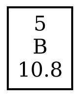

基礎題
元素符號「21H」所代表的意義，下列何項錯誤？
- (A) 氫的原子序為 1
- (B) 該氫原子中有 1 個質子
- (C) 該氫原子中有 1 個電子
- (D) 該氫原子中有 2 個中子
看答案與詳解
答案：(D)
中子數＝2−1＝1；中性原子電子數＝1。
(A)(B)(C) 正確，(D) 錯（中子 1 個），選 (D)。
對 16O、17O、18O 三種同位素而言，下列比較哪些正確？（應選 3 項）（多選）
- (A) 質子數：16O＜17O＜18O
- (B) 質量數：16O＝17O＝18O
- (C) 原子序：16O＝17O＝18O
- (D) 電子數：16O＝17O＝18O
- (E) 中子數：16O＜17O＜18O
看答案與詳解
答案：(C)(D)(E)
質子數＝原子序＝電子數＝8（三者相等）；質量數 16＜17＜18；中子數 8＜9＜10。
(A) ✘ (B) ✘ (C) ✔ (D) ✔ (E) ✔
下列粒子中，質量最小的是哪一種？
- (A) 質子
- (B) 氘原子
- (C) 電子
- (D) 中子
- (E) α 粒子
看答案與詳解
答案：(C)
鋁原子（Al）的原子序為 13，質量數為 27，下列有關其原子結構的敘述，何者正確？
- (A) 鋁原子有 27 個質子
- (B) 鋁原子有 14 個中子
- (C) Al3+ 有 13 個電子
- (D) Al3+ 有 10 個質子
看答案與詳解
答案：(B)
Al3+ 失去 3 個電子 ⟶ 電子 10 個，質子仍 13 個。
(A) ✘ (B) ✔ (C) ✘ (D) ✘
下列有關質子、中子、電子的敘述，哪一個是錯誤？
- (A) 質量大小：中子＞質子＞電子
- (B) 質子帶正電、電子帶負電、中子不帶電
- (C) 中性原子中的質子數與電子數必相等
- (D) 原子序即為質子數
- (E) 每種原子的原子核內必含有質子與中子
看答案與詳解
答案：(E)
(E) ✘ 最常見的氫 1H（氕）原子核只有 1 個質子、沒有中子，選 (E)。
下列電子、中子和原子核三者發現的先後順序，何者正確？
- (A) 電子、中子、原子核
- (B) 中子、電子、原子核
- (C) 電子、原子核、中子
- (D) 原子核、電子、中子
- (E) 原子核、中子、電子
看答案與詳解
答案：(C)
下列原子或離子中，何項之電子數與中子數相等？
- (A) 188O2−
- (B) 3216S2−
- (C) 146C
- (D) 2311Na+
- (E) 2412Mg2+
看答案與詳解
答案：(A)
(A) O2−：電子 10、中子 10 ✔
(B) S2−：電子 18、中子 16
(C) C：電子 6、中子 8
(D) Na+：電子 10、中子 12
(E) Mg2+：電子 10、中子 12
元素 X 之陰離子 Xn− 在核外有 B 個電子，元素質量數為 A，則其原子核內中子數為下列何者？
- (A) A＋B＋n
- (B) A−B＋n
- (C) A−B−n
- (D) B−A＋n
- (E) B−A−n
看答案與詳解
答案：(B)
中子數＝質量數−質子數＝A−(B−n)＝A−B＋n，選 (B)。
在 NH4+ 中（N 的質量數為 14、原子序為 7）共含有中子、質子、電子各多少個？
- (A) 7 個中子、7 個質子、6 個電子
- (B) 5 個中子、5 個質子、4 個電子
- (C) 7 個中子、11 個質子、10 個電子
- (D) 7 個中子、11 個質子、11 個電子
- (E) 11 個中子、7 個質子、14 個電子
看答案與詳解
答案：(C)
陷阱：(D) 忘了 ＋1 價要少 1 個電子。
下列何者具有與 NH4+ 相同的電子數？（多選）
- (A) Cl−
- (B) F−
- (C) Ca2+
- (D) Al3+
- (E) OH−
看答案與詳解
答案：(B)(D)(E)
(A) ✘ Cl−＝17＋1＝18
(B) ✔ F−＝9＋1＝10
(C) ✘ Ca2+＝20−2＝18
(D) ✔ Al3+＝13−3＝10
(E) ✔ OH−＝8＋1＋1＝10
某元素 M 與氧形成的離子 MO2+ 中，共有電子 108 個，則質量數為 239 的元素 M，原子核中含有多少個質子？[提示：16O]
- (A) 93
- (B) 146
- (C) 148
- (D) 162
- (E) 147
看答案與詳解
答案：(A)
陷阱：質量數 239 是用來算中子數（239−93＝146）的，本題問質子。
原子序 m 的原子 M，其 M2− 核外有 a 個電子；原子序 n 的原子 N，其 N+ 核外有 b 個電子，若 a＝b，則 m 與 n 之關係為：
- (A) m＝n－4
- (B) 2＋m＝n
- (C) n－m＝2
- (D) m－n＝－3
- (E) m＝n＋3
看答案與詳解
答案：(D)
a＝b ⟶ m＋2＝n−1 ⟶ m−n＝−3，選 (D)。
驗算：O2−（8）與 Na+（11）都有 10 個電子，8−11＝−3。
HT+ 中所含各種粒子的個數，下列何者正確？
- (A) 中子 1 個，電子 1 個，質子 2 個
- (B) 中子 2 個，電子 1 個，質子 2 個
- (C) 中子 2 個，電子 2 個，質子 2 個
- (D) 中子 2 個，電子 2 個，質子 3 個
看答案與詳解
答案：(B)
HT 分子：質子 2、中子 2、電子 2；帶 ＋1 ⟶ 少 1 個電子。
HT+：中子 2、電子 1、質子 2，選 (B)。
設重水（D2O）中 O 的質量數為 16，則下列敘述何者正確？
- (A) D2O 一分子中的質子有 10 個
- (B) D2O 一分子中的總電子數有 8 個
- (C) D2O 中子數與質子數相差 1 個
- (D) D2O 一分子中的中子有 9 個
看答案與詳解
答案：(A)
D2O：質子 2＋8＝10、電子 10、中子 2＋8＝10。
(A) ✔ (B) ✘ 電子 10 個 (C) ✘ 相差 0 (D) ✘ 中子 10 個
陷阱：把 D 當成普通 H（沒有中子）。
請問下列原子或離子的質子數、中子數、電子數與其質量數皆為偶數？
- (A) 21H
- (B) 136C
- (C) 168O
- (D) 199F
- (E) 2311Na+
看答案與詳解
答案：(C)
(A) ✘ 質子 1 為奇數。
(B) ✘ 中子 7、質量數 13 為奇數。
(C) ✔ 質子 8、中子 8、電子 8、質量數 16，全為偶數。
(D) ✘ 質子 9 為奇數。
(E) ✘ 質子 11、質量數 23 為奇數。
有關拉塞福的 α 粒子散射實驗，下列敘述何者正確？
- (A) 拉塞福以 α 粒子撞擊金屬箔，α 粒子相當於氫原子核
- (B) 發現絕大部分用來撞擊的粒子產生偏折，只有少數粒子穿過金屬箔
- (C) 證實了湯姆森的葡萄乾布丁模型的正確性
- (D) 由於「α 粒子」和原子核都帶正電荷，故會產生 180° 大角度反轉
- (E) 同時發現了中子的存在
看答案與詳解
答案：(D)
(B) ✘ 絕大部分直接穿過，只有極少數偏折或反彈。
(C) ✘ 結果推翻了葡萄乾布丁模型。
(D) ✔ 少數 α 粒子正面接近帶正電、質量集中的原子核，受強大斥力而大角度反彈。
(E) ✘ 中子是查兌克發現的。
拉塞福提出的原子模型中，哪一個選項是拉塞福無法證實行星模型是正確原子模型的主因？
- (A) 因為質子太輕無法穩定存在於原子核中所以不會有行星模型
- (B) 拉塞福的老師湯姆森所提的西瓜模型才是較為正確的原子模型
- (C) 當時古典物理學家認為電子是屬於帶電並加速度的粒子應隨著持續放能而最後墜入原子核
- (D) 當時近代物理學家認為凡是一切物質都可以用量子力學來解釋
- (E) 拉塞福的氦原子核的散射實驗失敗告終造成無法證實行星模型
看答案與詳解
答案：(C)
(B) ✘ 湯姆森模型正是被拉塞福推翻的。(D) ✘ 量子力學是之後才發展。(E) ✘ 散射實驗是成功的，正是提出原子核模型的依據。
下列何者為陰極射線所具有的性質？（多選）
- (A) 在無電場干擾下，其行進路線為直線
- (B) 在陰極射線管外放置磁鐵，則射線往 S 極偏折
- (C) 在陰極射線管外架設電場，則射線往正極偏折
- (D) 更換陰極金屬材料後，仍可見陰極射線
- (E) 在射線路徑中放置風車，發現風車轉動，此乃因電子帶負電所致
看答案與詳解
答案：(A)(C)(D)
(A) ✔ 不受外力時直線前進。
(B) ✘ 帶電粒子在磁場中受力方向與磁場垂直，不是被某一極吸過去。
(C) ✔ 帶負電，往正極偏折。
(D) ✔ 換任何金屬當陰極都有相同射線 ⟶ 電子是所有物質共有的粒子。
(E) ✘ 風車轉動說明粒子具有質量（動量），與帶負電無關。
下列關於科學史的敘述，下列哪些正確？（應選 2 項）（多選）
- (A) 亞佛加厥認為「同溫同壓下，氣體的體積比等於分子數比」
- (B) 拉塞福以 α 粒子進行散射實驗發現質子
- (C) 史塔爾觀察到貝歇爾教授的房子被燒毀而提出四元素論
- (D) 查兌克以 α 粒子撞擊鈹原子核，發現中子的存在
- (E) 湯姆森透過陰極射線實驗，提出行星原子模型
看答案與詳解
答案：(A)(D)
(B) ✘ 散射實驗發現的是原子核。
(C) ✘ 史塔爾提出的是燃素說。
(D) ✔ 查兌克以 α 粒子撞擊鈹發現中子。
(E) ✘ 湯姆森提出葡萄乾布丁模型；行星模型是拉塞福提出的。
以下五種粒子，甲：α 粒子；乙：16O2−；丙：質子；丁：中子；戊：電子，則荷質比最小與最大的組合為下列何者？（荷質比為粒子電荷量與質量比值的絕對值）
- (A) 戊、甲
- (B) 丁、乙
- (C) 丁、丙
- (D) 丁、戊
- (E) 丙、乙
看答案與詳解
答案：(D)
最小是中子（不帶電，荷質比 0）、最大是電子，選 (D)。
下列有關原子的敘述，何者正確？
- (A) 原子皆由電子、質子與中子所組成
- (B) 質子和中子的數目一定相等
- (C) 拉塞福利用 α 粒子散射實驗發現質子
- (D) 根據密立坎油滴實驗，粒子的帶電量可為 3.2×10−20 庫倫
- (E) 道耳吞的原子說可以解釋質量守恆定律
看答案與詳解
答案：(E)
(B) ✘ 質子數與中子數不一定相等。
(C) ✘ 散射實驗發現的是原子核。
(D) ✘ 帶電量必為 1.6×10−19 庫侖的整數倍，3.2×10−20 只有 0.2 倍。
(E) ✔ 化學反應只是原子重新排列，原子種類與數目不變 ⟶ 總質量不變。
在自然界的銀有兩種：107Ag、109Ag，其平均原子量為 107.8，試問下列何者為 107Ag、109Ag 在自然界中的含量比例？
- (A) 1：1
- (B) 2：1
- (C) 2：3
- (D) 3：2
- (E) 4：1
看答案與詳解
答案：(D)
107Ag：109Ag＝0.6：0.4＝3：2，選 (D)。
快解：107.8 距 107 為 0.8、距 109 為 1.2，含量比＝距離反比＝1.2：0.8＝3：2。
自然界的氯有 35Cl 和 37Cl 兩種同位素，其中 35Cl 占 75%，下列敘述哪些正確？（應選三項）（多選）
- (A) 35Cl 和 37Cl 有相同的原子序
- (B) 35Cl 和 37Cl 有相同的中子數
- (C) 氯的平均原子量為 35.5
- (D) 35Cl 和 37Cl 互為同素異形體
- (E) 35Cl 和 37Cl 有相同的化學性質
看答案與詳解
答案：(A)(C)(E)
(A) ✔ 原子序都是 17。
(B) ✘ 中子數 18 與 20。
(C) ✔ 35×0.75＋37×0.25＝35.5。
(D) ✘ 兩者是同位素；同素異形體指同一元素的不同單質（如 O2 與 O3）。
(E) ✔ 電子數相同，化學性質相同。
進階題
某酸根 XO42− 離子中有 66 個電子，已知氧的原子序為 8，質量數為 16，則 72X 原子中含有幾個中子？
- (A) 16
- (B) 32
- (C) 36
- (D) 40
- (E) 50
看答案與詳解
答案：(D)
72X 中子數＝72−32＝40，選 (D)。
陷阱：陰離子要「加」上電荷數。
已知某種鐵的同位素離子 Fe3+ 比鈣原子多出三個電子，且其原子之中子數亦較電子數多出三個，則該原子的質子數、質量數分別為何？
- (A) 20，43
- (B) 23，49
- (C) 26，55
- (D) 26，56
- (E) 23，55
看答案與詳解
答案：(C)
「原子」的中子數比電子數（26）多 3 ⟶ 中子 29 ⟶ 質量數＝26＋29＝55，選 (C)。
陷阱：比的是原子的電子數 26，不是離子的 23。
有下列三種粒子：（甲）氮原子核 157N（乙）碳原子核 136C（丙）α 粒子，請將這些粒子之荷質比由大而小排列？
- (A) 乙丙甲
- (B) 乙甲丙
- (C) 丙乙甲
- (D) 甲丙乙
- (E) 丙甲乙
看答案與詳解
答案：(E)
甲 7/15≈0.467；乙 6/13≈0.462；丙 α＝2/4＝0.500。
丙＞甲＞乙，選 (E)。
拉塞福以 α 粒子撞擊金箔，發現偶爾會有大角度的散射，因而提出電子與原子核的關係，下列關於拉塞福實驗與其原子模型的敘述，哪些正確？（應選 2 項）（多選）
- (A) α 粒子與原子的電子間沒有靜電力
- (B) α 粒子與原子核間的靜電力為吸引力
- (C) 原子中的電子若損失能量，可使電子更接近原子核
- (D) α 粒子偶爾會有大角度的散射，主要是因為與多個電子發生碰撞
- (E) α 粒子偶爾會有大角度的散射，主要是因為原子的正電荷集中於極小的原子核
看答案與詳解
答案：(C)(E)
(B) ✘ α 粒子與原子核都帶正電，是排斥力。
(C) ✔ 依拉塞福模型，電子損失能量會逐漸靠近原子核（這也是此模型的缺陷）。
(D) ✘ 電子太輕，撞不偏 α 粒子。
(E) ✔ 正電荷與質量集中於極小的原子核，少數 α 粒子靠近原子核時被強烈排斥而大角度散射。
已知硼原子的質量為 10.81 amu，硼原子乃由原子量為 10.01 的 10B 和原子量為 11.01 的 11B 兩種同位素組成，則 10B 所佔硼原子的百分率為下列何者？
- (A) 20%
- (B) 30%
- (C) 70%
- (D) 80%
看答案與詳解
答案：(A)
快速檢查：平均值靠近 11.01，所以 11B 較多。
若某化合物純晶體 AB 中 A 佔 40%，若 B 有兩種同位素 30B 及 32B，其中 30B 佔 55%，且 A 也有 20A 及 22A 兩種同位素。則 20A 佔若干%？
- (A) 40%
- (B) 70%
- (C) 45%
- (D) 30%
看答案與詳解
答案：(B)
AB 中 A：B 質量比＝40：60 ⟶ A＝30.9×40/60＝20.6。
20x＋22(1−x)＝20.6 ⟶ x＝0.7＝70%，選 (B)。
X2+、Y 及 Z2− 都具有 18 個電子及 20 個中子，下列有關 X、Y 及 Z 三元素的敘述，何者正確？
- (A) X、Y 及 Z 為同一週期的元素
- (B) X、Y 及 Z 為同一族的元素
- (C) X、Y 及 Z 為同位素
- (D) 原子序大小：X＜Y＜Z
- (E) X、Y 及 Z 其中有 1 個為金屬元素
看答案與詳解
答案：(E)
(A) ✘ Ca 在第四週期，Ar、S 在第三週期。
(B) ✘ 分屬 2、18、16 族。
(C) ✘ 質子數不同，不是同位素。
(D) ✘ 原子序 X＞Y＞Z。
(E) ✔ 只有 Ca 是金屬。
從密立坎油滴實驗中，觀察到甲、乙兩油滴電量分別為甲＝1.28×10−9 esu、乙＝9.6×10−10 esu，則根據甲、乙兩油滴求出之電子可能電量，請問下述哪些正確？（多選）
- (A) 電子帶有的最小電量為 3.2×10−10 esu
- (B) 電子帶有的電量可能為 8×10−11 esu
- (C) 湯姆森發明了陰極射線管，進行陰極射線實驗，進而發現了帶負電的電子
- (D) 密立坎的實驗結果可直接求得電子的質量
- (E) 若另一丙油滴之電量為 3.84×10−9 esu，可得知丙油滴最少附有 12 個電子
看答案與詳解
答案：(B)(E)
(A) ✘ 3.2×10−10 esu 是 e 的「最大」可能值，不是最小。
(B) ✔ 8×10−11＝3.2×10−10/4。
(C) ✘ 陰極射線管不是湯姆森發明的，他是利用陰極射線管做實驗而發現電子。
(D) ✘ 油滴實驗求的是電量；電子質量還要配合荷質比。
(E) ✔ 3.84×10−9÷3.2×10−10＝12；e 若更小，電子數為 12k ⟶ 最少 12 個。
已知自然界中，硼元素有兩種不同質量的原子：10B＝10.0 amu，11B＝11.0 amu，而硼元素在週期表中標示如附圖，則 2 莫耳硼原子中，約含 10B 原子若干克？

- (A) 4.0
- (B) 18.0
- (C) 10.8
- (D) 16.0
- (E) 2.0
看答案與詳解
答案：(A)
2 mol 硼原子中 10B＝2×0.2＝0.4 mol ⟶ 質量＝0.4×10.0＝4.0 克，選 (A)。
陷阱：問的是 10B 的「克數」，要用 0.4 mol 乘 10B 的原子量 10.0，不是乘平均原子量 10.8。
大考／素養題
利用中子來撞擊重原子核，使重核發生分裂，產生兩個較小的核與中子，並放出巨大的能量。這種產生核能的方式稱為核分裂，例如用中子撞擊鈾原子核，可用下列的核反應式來表示：23592U＋10n ⟶ 14156Ba＋92wKr＋x 10n＋能量。下列哪一個選項中的兩個數字，正確表示上式中的 w 與 x？［註：式中 Kr 是與 He、Ne 同屬於週期表的第 18 族（VIIIA 族）的元素］
- (A) 34 與 5
- (B) 35 與 4
- (C) 35 與 5
- (D) 36 與 2
- (E) 36 與 3
看答案與詳解
答案：(E)
原子序：92＋0＝56＋w ⟶ w＝36。
質量數：235＋1＝141＋92＋x ⟶ x＝3。
選 (E)。（w＝36 也正好是 Kr 的原子序）
某 2004 年，日本理化學研究所的森田浩介研究團隊製造出原子序 113 號的元素，2016 年正式以日本國名（日語發音為“Nihon”）命名為 Nihonium（縮寫 Nh，我國命名為鉨）。森田浩介研究團隊以 7030Zn 撞擊 20983Bi，產生核反應，該反應產生 278113Nh 與甲兩種粒子。278113Nh 不穩定，在經過 x 次 α 衰變後形成 254101Md，上述核反應式分別如下： 7030Zn ＋ 20983Bi ⟶ 278113Nh ＋ 甲 278113Nh ⟶ 254101Md ＋ x α 試問甲與 x 分別為何？
- (A) 中子，6
- (B) 質子，6
- (C) β 粒子，12
- (D) 中子，12
- (E) 質子，12
看答案與詳解
答案：(A)
① 甲：質量數 70＋209−278＝1；原子序 30＋83−113＝0 ⟶ 10n，中子。
② α＝42He：質量數 278−254＝24＝4x ⟶ x＝6；驗算原子序 113−101＝12＝2×6 ✔。
選 (A)。
若 23892U 的原子核放射出一個 α 粒子，則剩留的原子核內會含有幾個質子？
- (A) 237
- (B) 236
- (C) 146
- (D) 91
- (E) 90
看答案與詳解
答案：(E)
剩下的原子核：質子 92−2＝90（質量數 234，即 Th），選 (E)。
原子理論的發展故事是一連串早期的實驗，用來幫助『看無法看到的物，瞭解不易瞭解的事』。有關這些故事中的科學家與其重大科學發現或理論，下列哪個選項的組合是錯誤的？
- (A) 道耳吞：提倡原子學說
- (B) 湯木生：發現電子
- (C) 拉塞福：提出原子結構的模型
- (D) 波耳：建立量子化的氫原子模型
- (E) 門得列夫：提出原子序的意義
看答案與詳解
答案：(E)
下列與原子核有關的敘述，何者正確？（多選）
- (A) 核反應遵守質量守恆定律
- (B) 若一個質量數為 A，原子序為 Z 的原子，其中子數目為 Z－A
- (C) 台灣核三廠之核能發電與投到廣島之原子彈皆為核分裂的實例
- (D) 不同質量數，但在中性時具有相同電子數的原子，稱為同位素
- (E) 原子核的放射性不受溫度及壓力的影響而改變
看答案與詳解
答案：(C)(D)(E)
(B) ✘ 中子數＝A−Z。
(C) ✔ 核電廠與原子彈都是鈾的核分裂。
(D) ✔ 中性時電子數相同 ⟶ 質子數相同、質量數不同 ⟶ 同位素。
(E) ✔ 放射性是原子核的性質，與溫度、壓力無關。
碳的原子量為 12.01，已知碳的同位素有 12C、13C 及極微量的 14C。試問下列哪一選項為 12C 與 13C 在自然界中的含量比例？
- (A) 1：1
- (B) 9：1
- (C) 49：1
- (D) 99：1
- (E) 199：1
看答案與詳解
答案：(D)
12C：13C＝99：1，選 (D)。
某元素有兩種同位素。一種為 105X，質量為 10.0129 amu，佔 19.91%；另一種為 115X，質量為 11.0093 amu，佔 80.09%。元素 X 的原子量是下列哪一個？（取到二位小數）
- (A) 5.00
- (B) 10.01
- (C) 10.50
- (D) 10.81
- (E) 11.01
看答案與詳解
答案：(D)
秒殺：11X 占 80%，答案必在 10.0～11.0 之間且靠近 11 ⟶ 10.81。